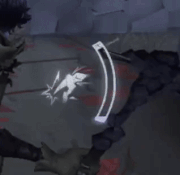

I used the window structure as a reference point, and predicted the doctor would vault through it. If you throw the pickaxe early, you can deal the hit either during the animation or after the survivor has crossed the other side.
As of late 2023, "Fool's Gold" is a new hunter added to Identity V as an identity switch to Norton Campbell, the "Prospector". Before picking him up I've been exclusively playing the survivor faction, with maybe a minor tolerance for Luchino customs. After having brushed up on hunter basics with the motivation to play as one of my favorite characters under a new context, I figured my personal findings were qualified 'fer their own entry.
Pickaxe "recalling" is when you retrieve the pickaxe back after throwing it. When you recall, it deals 1/4 chip damage to anyone within unstable ground.
It's actually integral to a victory (as I'll describe in another section), but also equally good for guaranteeing a survivor's victory if you can't time the recalls correctly.
For the most part people are carrying Broken Windows (tldr; 50%+ speed boost after vaulting a window) which is usually prevented just for the sole fact that FG can deal chip damage anytime a player comes into contact with a wall, hence why they bait FG players into entering cooldown.
What's the importance of baiting? Fool's Gold (or FG) is pretty easy to counter. Yeah, this is the last thing you want to hear, but it's worth knowing what survivors are looking for from hunters like you.
Like any other hunter ability, a cooldown period locks the skill after usage; in FG's case, for 6 seconds.
Smart [typically higher ranking] survivors are probably going to bait you into wasting your pickaxe throw, which is 6 seconds enough time to either open the distance or transition from one kiting area to the next, and that's about enough time for 2-3 ciphers to gain 4% more progress each.
Don't get lenient or tardy with your pickaxe recalls. As soon as someone transitions to the next kiting area (so maybe after a window vault), that's when you recall, and use the time to wait out the cooldown within an open space that way you'll have your ability ready by the time you arrive to the next loop. As long as you can identify an infinite loop from an open space this is pretty easy to do.
This is where the mind games enter, stage-right. In an instance that you throw the pick but don't deal any damage, don't immediately call it back until the survivor runs away from the wall you threw the pick into (identified by the "unstable ground" effects).
Just by sparing the callback for a little more time, it's basically a passive deterrent that keeps your chase from vaulting any windows or pallets connected to any unstable ground, only to lead them into your pyrite-clad fist.
... Alternatively, if they manage the vault and you still somehow miss any damage, recall the pick immediately.
Conclusion, keep an eye out for wallhuggers.
Similar to Antonio's playstyle, good pickaxe throws start with predicting how another player kites you. Of course, I'm shit at Antonio, so this is about Norton.
The sure-fire way to deal chip damage is by catching survivors in the middle of an animation. You need to have a decent understanding of the maps you're playing on and what the windows look like since they can vary in appearance, but if you know where the survivor is going next, you will know when to throw the pick. Just keep an eye on the direction your chase is heading, because it might lead itself out the window.
Depicted is a bot absorbing the regular 1/4 damage that unstable ground deals before any presence.
Pallets are also a fine reference point but not the most reliable if it hasn't been thrown down yet. Even though all pallets look the same, you're depending on the survivor to be touching a wall and the space underneath a pallet is just slightly big enough to allow a player to go unscathed.
Like many other hunters using your ability can generate a sound effect that can be heard across the map. Players will adapt and learn who you're playing, though that's not really something you have to worry about because besides generating unstable ground, the pickaxe can close distances.
Norton is no man of stealth, and is rather a proud character with a loud playstyle to match.
By all means, make as much noise as you want.

For some reason a lot of FG players just forget that they can dash because they're too fixated on chip damage.
Make a habit of using the dash between kiting area transitions, or even getting ahead of players to pressure them into changing direction. I know it freaks my friends out.

Magnetic Conversions (or "the rock") is the second ability you receive at half presence. It basically wires together several walls with an unstable ground within its perimeter, and any unstable ground you throw your pickaxe at will also affect this area (hence the ability name "chain reaction").

You can deal damage across the map while camping using the magnetic conversion ability. After chairing the survivor, stand from a wall and look around the map for vibrating ciphers.
First, throw the pick at the walls around the chair to prepare stable ground, but don't recall the pickaxe yet.
You might have to move away from the chair in order to reach the vibrating cipher given that survivors are less likely to decode nearby a camping hunter.
Place the magnetic rock at the vibrating cipher (verify the placement by the cipher's purple highlight), and immediately retrieve after placement. This will not only deal damage, but pressure cipher machines from being finished while you scout rescuers. This perk is what truly makes Norton a jack of all trades, in both factions.
There's also an incorrect way to perform this trick and I'll explain why, even though the consequences aren't too awful. Refer to the clip below:

If you do place the rock before the unstable ground, you'll only be able cipher pressure but you probably won't get any hits because survivors will move away as soon as they see the rock. By the time you move back to activate chain reaction, it gave the survivor 1 or 2 seconds to move off the unstable ground.
This is a jumpscare tactic; you don't want them to expect the hit. Fortunately I was using bots for this demonstration so I got a hit in anyway.
Norton's full presence will make chase hell for survivors. Instant reaction refers to the final stage of hunter presence in which Norton can charge his pickaxe into unstable ground damage that instantly takes 1/4 of survivor state upon throwing.
Here's one of the tricks I do after unlocking full presence:
Instant reaction won't have much emphasis in regular camping, but is perfect for discouraging rescuers too far from the chair who may end up absorbing the instant reaction. No, for close-up camping, you need to depend on patience.
With the pickaxe you're pretty much given a free half-state hit with no attack recovery, which can easily turn into a downed survivor if you land a regular hit afterwards. At most, you can depend on his unstable ground to prolong the chair progress into its second stage even if you miss the pick damage + terror shock.
There's not much I can advise for this section besides practicing and expecting a lot of fakeouts. Rescuing survivors will just simply touch the chair a couple times to lure you into using your pickaxe to enter cooldown, and they're far more unpredictable than you are to them.
You've pretty much won if you can get a survivor in there lest the team just decides to sell the unlucky player. From there, it's all chip!

Watch how prisoner's state tracks damage; 1/4 damage from the pick throw into prepared unstableg ground, 1/4 more damage from retracting the pick. That's a whole free hit with no attack recovery. Then, the final blow.
Because the basement has only one linear route to enter and exit from, you can guarantee damage on survivors before they even reach the chair, thanks to the stairwell.
Hunter Norton is one of the more counterable hunters which relies on survivor slack, but has so far been nothing but a guaranteed-tie hunter in my time playing as him.
Fool's Gold requires the same attention that Antonio (violinist) and Grace (Naiad) do.
Like Antonio, a single ability attack has two phases that require a lot of guessing and trapping players into falling in line with said attack.
Like Grace, even if he hasn't performed a pickaxe attack correctly, just the presence of his collapse or magnetic rock can "fumigate" survivors into leaving a loop too early or too late.
Happy hunting.